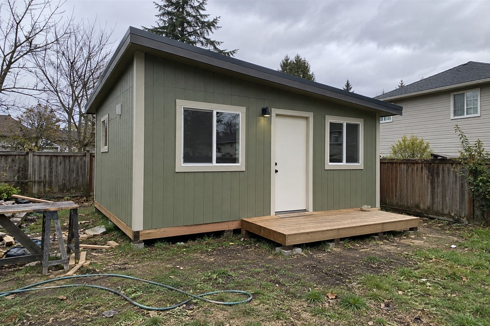
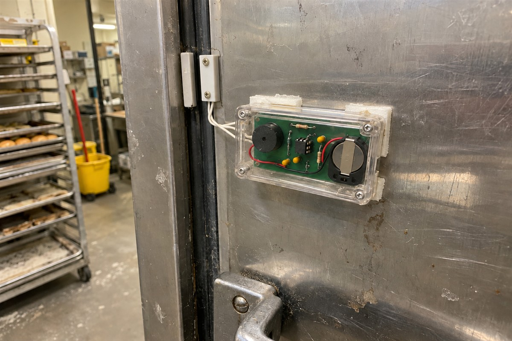

A local bike shop needed a wall rack that could hold six bikes without eating up their whole back room, so I designed one in FreeCAD. Nothing fancy. Just bent steel tube and a couple of flat brackets. I made the cut and bend drawings in AutoCAD Mechanical for the welder down the street. The first version had the hooks too close together and the handlebars kept bumping into each other, which was annoying to find out after it was already built, so I moved them out 4 inches on the second try and it’s been on the wall for over a year now.
On the wall for over a year
SHEET 02 / 04 · Architecture & BIM
Backyard studio

I did the model for a small backyard studio for a homeowner while I was freelancing. It was basically one room and a little deck. I drew it up in Vectorworks, and the client kept changing the window sizes, which got old fast, but the model handled it fine. Once things settled I exported an IFC and opened it in Blender with Bonsai to double check the roof framing before it went to the builder. I did all of it myself, from the first sketch to the drawings the builder actually used.
SHEET 03 / 04 · Electronics design
Fridge door alarm

A local bakery paid me to build a little beeper that goes off when the walk-in fridge door gets left open too long. I simulated the timer and buzzer driver in LTspice first so the delay landed somewhere around two minutes. The layout was in KiCad, just a two layer board about the size of a matchbox, and I sent it off to JLCPCB. My first batch had the reed switch footprint flipped, which was a dumb mistake and cost me a week. Second round worked, and it’s been stuck to that fridge door for months now.
On the fridge door for months
SHEET 04 / 04 · Game development
Escape room lobby game
A local escape room business hired me to make a short puzzle game for the tablet in their lobby, something people could mess with while they waited. I built it in Godot and wrote pretty much everything myself, from the tap controls to the little hint system. The tablet was old and cheap, so I spent way more time than I expected shrinking textures just to stop it from stuttering. It’s maybe ten minutes of gameplay. They still have it running, and the owner says kids fight over it.